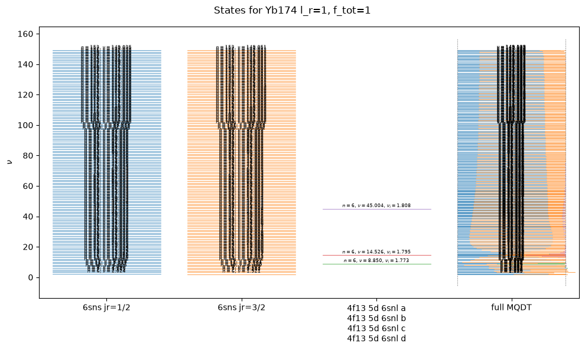

This page was generated from the Jupyter notebook
spectrum_with_overlaps.ipynb.
MQDT Spectrum with overlaps of OSQDT states
[1]:
from __future__ import annotations
# %matplotlib widget
import logging
import matplotlib.pyplot as plt
import numpy as np
logging.basicConfig(level=logging.INFO)
logging.getLogger("matplotlib").setLevel(logging.WARNING)
logging.getLogger("rydstate").setLevel(logging.WARNING)
[2]:
from typing import TYPE_CHECKING
import rydstate
if TYPE_CHECKING:
from rydstate.rydberg_state import RydbergState
[3]:
species = "Yb174"
l_r = 1
f_tot = 1
nu_range = (0, 150)
basis_osqdt_full = rydstate.BasisOSQDT(species, nu=nu_range, l_r=(l_r, l_r), f_tot=(f_tot, f_tot))
[4]:
basis_osqdt_full.sort_states("nu")
print(f"basis_osqdt_full: {len(basis_osqdt_full.states)} states")
basis_osqdt_full: 299 states
[5]:
basis_osqdt = basis_osqdt_full.shallow_copy()
basis_dict: dict[str, rydstate.basis.BasisBase[RydbergState]] = {}
basis_dict["6sns jr=1/2"] = (
basis_osqdt.shallow_copy().filter_states("l_c", 0).filter_states("l_r", l_r).filter_states("j_r", 1 / 2)
)
basis_dict["6sns jr=3/2"] = (
basis_osqdt.shallow_copy().filter_states("l_c", 0).filter_states("l_r", l_r).filter_states("j_r", 3 / 2)
)
# the perturber channels have parity (-1)**l_r, i.e. -1 for the l_r = 1 states considered here
parity = (-1) ** l_r
for key in ["4f13 5d 6snl a", "4f13 5d 6snl b", "4f13 5d 6snl c", "4f13 5d 6snl d"]:
basis_dict[key] = basis_osqdt.shallow_copy().filter_states("parity", parity).filter_states_label(key)
basis_mqdt = rydstate.BasisMQDT(species, nu=nu_range, f_tot=(f_tot, f_tot), l_r=(l_r, l_r))
basis_dict["full MQDT"] = basis_mqdt
for key, basis in basis_dict.items():
print(f"{key}: {len(basis.states)} states")
for state in basis.states[:3]:
print(f" {state}")
print(" ...\n")
6sns jr=1/2: 148 states
|Yb174:(6s_1/2,6p_1/2),J=1⟩
|Yb174:(6s_1/2,7p_1/2),J=1⟩
|Yb174:(6s_1/2,8p_1/2),J=1⟩
...
6sns jr=3/2: 148 states
|Yb174:(6s_1/2,6p_3/2),J=1⟩
|Yb174:(6s_1/2,7p_3/2),J=1⟩
|Yb174:(6s_1/2,8p_3/2),J=1⟩
...
4f13 5d 6snl a: 1 states
|Yb174:nu=1.8,4f13 5d 6snl a⟩
...
4f13 5d 6snl b: 1 states
|Yb174:nu=1.8,4f13 5d 6snl b⟩
...
4f13 5d 6snl c: 1 states
|Yb174:nu=1.8,4f13 5d 6snl c⟩
...
4f13 5d 6snl d: 0 states
...
full MQDT: 299 states
0.69*|Yb174:(6s_1/2,[1.8]p_3/2),J=1⟩ + 0.73*|Yb174:(6s_1/2,[1.8]p_1/2),J=1⟩
-0.4*|Yb174:(6s_1/2,[2.1]p_3/2),J=1⟩ + 0.92*|Yb174:(6s_1/2,[2.1]p_1/2),J=1⟩
0.58*|Yb174:(6s_1/2,[3.0]p_3/2),J=1⟩ + 0.82*|Yb174:(6s_1/2,[3.0]p_1/2),J=1⟩
...
[6]:
overlaps_dict: dict[str, list[float]] = {}
for key, basis in basis_dict.items():
if isinstance(basis, rydstate.basis.BasisMQDT):
continue
overlaps = basis_mqdt.calc_reduced_overlaps(basis)
overlaps_dict[key] = np.sum(overlaps**2, axis=1).tolist()
[7]:
x_loc = {
# S_05
"6sns jr=1/2": 0,
"6sns jr=3/2": 1,
# general
"4f13 5d 6snl a": 2,
"4f13 5d 6snl b": 2,
"4f13 5d 6snl c": 2,
"4f13 5d 6snl d": 2,
# mqdt
"full MQDT": 3,
}
fig, ax = plt.subplots(figsize=(10, 6))
keys = list(basis_dict.keys())
keys_mo_mqdt = [key for key in keys if "MQDT" not in key]
# OQDT states
for i, key in enumerate(keys_mo_mqdt):
x = x_loc.get(key)
for state in basis_dict[key].states:
if np.isinf(state.nu):
continue
ax.plot([x - 0.4, x + 0.4], [state.nu, state.nu], color=f"C{i}", lw=0.5, zorder=0)
label = rf"$n={state.n}$, $\nu={state.nu:.3f}$"
if not np.isclose(state.nu, state.nui):
label += rf", $\nu_{{i}}={state.nui:.3f}$"
ax.text(x, state.nu, label, ha="center", va="bottom", fontsize=6, clip_on=True)
# MQDT states
for ids, state in enumerate(basis_mqdt.states):
if np.isinf(state.nu):
continue
overlaps = {key: overlaps_dict[key][ids] for key in keys_mo_mqdt}
x0 = x_loc["full MQDT"] - 0.4
for i, key in enumerate(keys_mo_mqdt):
overlap = overlaps[key]
x1 = x0 + overlap * 0.8
ax.plot([x0, x1], [state.nu, state.nu], color=f"C{i}", lw=0.5, zorder=0)
x0 = x1
ax.text(x_loc["full MQDT"], state.nu, rf"$\nu={state.nu:.3f}$", ha="center", va="bottom", fontsize=6, clip_on=True)
ylim = ax.get_ylim()
ax.plot([x_loc["full MQDT"] - 0.4, x_loc["full MQDT"] - 0.4], ylim, color="0.5", lw=0.5, ls="--", zorder=0)
ax.plot([x_loc["full MQDT"] + 0.4, x_loc["full MQDT"] + 0.4], ylim, color="0.5", lw=0.5, ls="--", zorder=0)
fig.suptitle(f"States for {species} {l_r=}, {f_tot=}")
xticklabels = {}
for key, x in x_loc.items():
if x not in xticklabels:
xticklabels[x] = key
else:
xticklabels[x] += f"\n{key}"
ax.set_xticks(list(xticklabels.keys()))
ax.set_xticklabels(list(xticklabels.values()))
ax.set_ylabel(r"$\nu$")
ax.set_xlim(-0.5, len(xticklabels) - 0.5)
plt.tight_layout()
plt.show()
